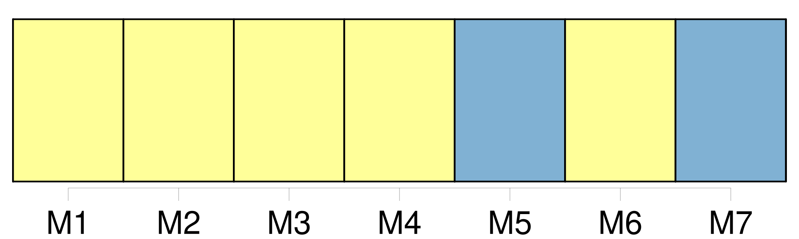

Longueur nb maillons : 9 mentions |
 |
L'acte authentique [du consentement dès pères et mères ou aïeuls et aïeules] , ou, à leur défaut, celui de la famille, contiendra les prénoms, noms, professions et domiciles du futur époux et de tous ceux qui auront concouru à l'acte, ainsi que leur degré de parenté. [209 phrases]
Le fils qui n'a pas atteint l'âge de vingt-cinq ans accomplis, la fille qui n'a pas atteint l'âge de vingt-un ans accomplis, ne peuvent contracter mariage sans [le consentement de leurs père et mère] : en cas de dissentiment, le consentement du père suffit. [19 phrases]
Les officiers de l'état civil qui auraient procédé à la célébration des mariages contractés par des fils n'ayant pas atteint l'âge de vingt-cinq ans accomplis, ou par des filles n'ayant pas atteint l'âge de vingt-un ans accomplis, sans que [le consentement des pères et mères] , celui des aïeuls et aïeules, et celui de la famille, dans le cas où ils sont requis, soient énoncés dans l'acte de mariage, seront, à la diligence des parties intéressées et du commissaire du Gouvernement près le tribunal de première instance du lieu où le mariage aura été célébré, condamnés à l'amende portée par l'article 192, et, en outre, à un emprisonnement dont la durée ne pourra être moindre de six mois. [60 phrases]
Le mariage contracté sans [le consentement des père et mère, des ascendans, ou du conseil de famille] , dans les cas où [ce consentement] était nécessaire, ne peut être attaqué que par ceux dont [le consentement] était requis, ou par celui des deux époux qui avait besoin de [ce consentement] [1 phrases] L'action en nullité ne peut plus être intentée ni par les époux, ni par les parens dont [le consentement] était requis, toutes les fois que le mariage a été approuvé expressément ou tacitement par ceux dont [le consentement] était nécessaire, ou lorsqu'il s'est écoulé une année sans réclamation de leur part, depuis qu'ils ont eu connaissance du mariage. |
|
Il est possible de télécharger la ressource sur la page Ortolang |
Si vous avez des questions ou vous voyez des erreurs, merci d'envoyer un mail à silvia.federzoni89@gmail.com |